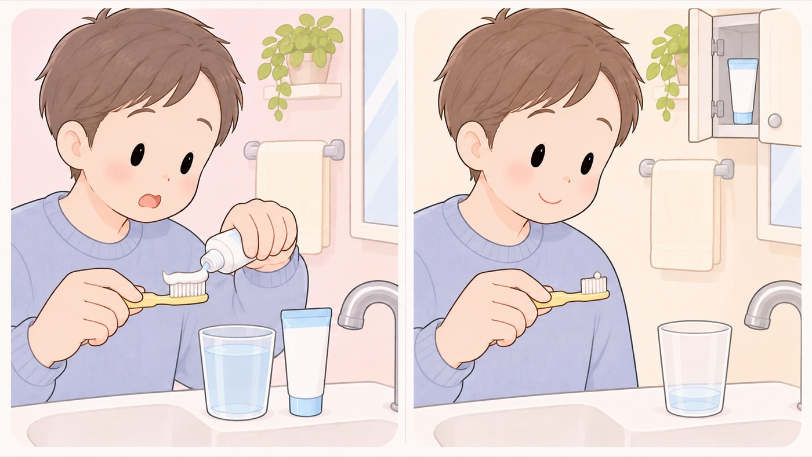

フッ化物入りの歯みがき剤を、いつから使うか
歯が生えたら米粒ぐらいを1日2回。うがいは少量の水で1回だけにする
歯みがき剤は飲み込むのが心配で、生えたばかりの歯には使わない人がいます。日本口腔衛生学会・日本小児歯科学会・日本歯科保存学会・日本老年歯科医学会の4学会は、歯が生えてから2歳までという区分を作り、この時期から米粒ぐらいの量のフッ化物入り歯みがき剤を使うことを勧めています。
う蝕予防のフッ化物の応用は75年以上の歴史があり、安全性と有効性が繰り返し確認されていると書かれています。

4学会が示している、年齢ごとの使い方
| 歯が生えてから2歳 | 米粒程度（1〜2mm程度）を、900〜1000ppmFの濃度で使います。みがいたあと、ティッシュなどで軽く拭き取ってもかまいません。 |
|---|---|
| 3〜5歳 | グリーンピース程度（5mm程度）を、900〜1000ppmFの濃度で使います。みがいたあとは軽くはき出し、うがいをするなら少量の水で1回だけにします。 |
| 6歳〜大人 | 歯ブラシ全体（1.5〜2cm程度）を、1400〜1500ppmFの濃度で使います。みがいたあとは軽くはき出します。 |
- すること：量は米粒ぐらい（1〜2mm）にする
4学会は、歯が生えてから2歳までの使用量を米粒程度としています。濃度は1000ppmFで、日本で売られている製品を踏まえると900〜1000ppmFにあたります。パッケージに書かれています。
- すること：寝る前を含めて、1日2回みがく
4学会は、どの年齢の区分でも就寝前を含めて1日2回としています。回数をこなすより、寝る前に入れることが効きます。
- すること：みがいたあと、ティッシュで軽く拭き取る
2歳までの区分について、4学会はこうしてもよいと書いています。まだ口をすすげない時期の、はき出しの代わりになります。
- すること：うがいは、少量の水で1回だけにする
3歳以上の区分で、4学会は「歯みがきの後は、歯磨剤を軽くはき出す。うがいをする場合は少量の水で1回のみとする」としています。何度もすすぐと、歯に残したいフッ化物を流してしまいます。
- すること：歯ブラシに慣れてから、歯みがき剤を使い始める
4学会は、乳歯が生え始めたらガーゼやコットンで口のケアの練習を始め、歯ブラシに慣れてきたら保護者による歯みがきを始めるとしています。順番が決まっています。
- しないこと：歯みがき剤を、子どもの手の届く場所に置かない
4学会は、2歳までの区分の使い方として、手が届かない所に保管することを挙げています。注意するのは、チューブごと食べるような大量の飲み込みです。
- しないこと：少し飲み込んだぐらいで、使うのをやめない
4学会は、乳幼児向けの歯みがき剤については、チューブを1本飲み込んでも問題ない総量の製品が基本的に作られて売られていると書いています。やめる理由にはなりません。
日本では、塗布や洗口と組み合わせる
4学会は、水道水へのフッ化物添加のような全身への応用が使えない日本では、 歯みがき剤に加えてフッ化物の洗口や塗布を組み合わせることも重要だと書いています。
濃度を上げれば予防の効果は高くなりますが、飲み込むことによるリスクがあるため、 年齢ごとに分けた推奨になっています。歯が作られる時期の乳幼児・小児では、 歯のフッ素症のリスクと予防の利点のつり合いを考え、 利点がリスクを上回ると考えられる使い方が選ばれています。
この項目の根拠
- 4学会合同のフッ化物配合歯磨剤の推奨される利用方法（2023年1月1日・日本口腔衛生学会／日本小児歯科学会／日本歯科保存学会／日本老年歯科医学会・PDF）（新しいタブで開きます）
う蝕予防のフッ化物応用は75年以上の歴史で安全性と有効性が繰り返し確認されており、中でもフッ化物配合歯磨剤は日本で広く普及していること。年齢別の推奨として、歯が生えてから2歳は米粒程度（1〜2mm程度）・1000ppmF（日本の製品を踏まえ900〜1000ppmF）で、就寝前を含めて1日2回の歯みがきを行い、歯みがきの後にティッシュなどで歯磨剤を軽く拭き取ってもよく、歯磨剤は子どもの手が届かない所に保管し、歯みがきについて専門家のアドバイスを受けること。3〜5歳はグリーンピース程度（5mm程度）・1000ppmF（同900〜1000ppmF）で、就寝前を含めて1日2回みがき、歯みがきの後は歯磨剤を軽くはき出し、うがいをする場合は少量の水で1回のみとし、子どもが歯ブラシに適切な量をつけられない場合は保護者が歯磨剤を出すこと。6歳〜成人・高齢者は歯ブラシ全体（1.5〜2cm程度）・1500ppmF（同1400〜1500ppmF）であること。乳歯が生え始めたらガーゼやコットンを使って口のケアの練習を始め、歯ブラシに慣れてきたら歯ブラシを用いた保護者による歯みがきを開始すること。子どもが誤って歯磨剤のチューブごと食べるなど大量に飲み込まないように注意すること。歯磨剤を製造する企業では乳幼児向け歯磨剤についてはチューブを1本飲み込んでも問題ない総量のチューブの製品の製造・販売が基本的にされているが、大量摂取には注意すること。水道水フロリデーションなどの全身応用が利用できない日本では、歯磨剤に加えフッ化物洗口や塗布の組合せも重要であること。歯磨剤のフッ化物濃度は高いほどう蝕予防効果が高いと考えられるが飲み込みによるリスクを考えて年齢別の推奨をおこなっており、歯の形成期である乳幼児・小児に対しては歯のフッ素症のリスクとう蝕予防のメリットのバランスを考慮してメリットがリスクを上回ると考えられる利用法が推奨されていること。
関連キーワード歯みがき粉歯磨き粉歯磨剤フッ素フッ化物ppm量米粒うがいすすぐ飲み込む誤飲いつから虫歯むし歯う蝕1日2回